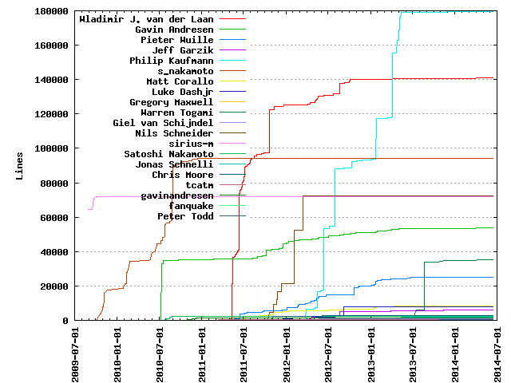
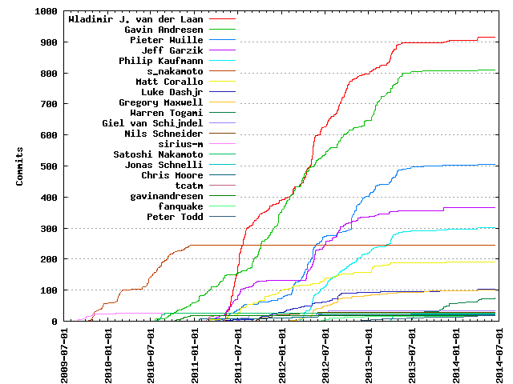

Authors
| Author | Commits (%) | + lines | - lines | First commit | Last commit | Age | Active days | # by commits |
|---|
| Wladimir J. van der Laan | 915 (21.53%) | 141007 | 90681 | 2011-05-08 | 2014-02-21 | 1020 days, 19:18:10 | 339 | 1 |
| Gavin Andresen | 810 (19.06%) | 53645 | 72819 | 2010-07-14 | 2014-02-13 | 1309 days, 2:48:36 | 361 | 2 |
| Pieter Wuille | 505 (11.88%) | 25151 | 42588 | 2011-03-18 | 2014-02-10 | 1060 days, 13:31:34 | 261 | 3 |
| Jeff Garzik | 367 (8.64%) | 5856 | 4916 | 2011-03-09 | 2013-10-02 | 938 days, 11:38:20 | 156 | 4 |
| Philip Kaufmann | 302 (7.11%) | 179344 | 104511 | 2012-03-17 | 2013-10-30 | 592 days, 10:48:48 | 164 | 5 |
| s_nakamoto | 245 (5.76%) | 93967 | 75303 | 2009-10-21 | 2010-12-16 | 420 days, 21:35:46 | 107 | 6 |
| Matt Corallo | 190 (4.47%) | 8238 | 2788 | 2011-03-05 | 2013-10-25 | 964 days, 17:20:21 | 118 | 7 |
| Luke Dashjr | 102 (2.40%) | 7980 | 6100 | 2011-01-29 | 2014-03-24 | 1150 days, 6:09:19 | 70 | 8 |
| Gregory Maxwell | 101 (2.38%) | 410 | 226 | 2012-02-02 | 2013-12-03 | 669 days, 20:25:41 | 75 | 9 |
| Warren Togami | 75 (1.76%) | 35091 | 5914 | 2013-05-12 | 2014-06-14 | 397 days, 10:53:32 | 44 | 10 |
| Giel van Schijndel | 34 (0.80%) | 1043 | 672 | 2011-06-25 | 2012-07-09 | 380 days, 3:55:21 | 13 | 11 |
| Nils Schneider | 28 (0.66%) | 72401 | 29995 | 2011-06-04 | 2012-05-31 | 362 days, 18:35:30 | 16 | 12 |
| sirius-m | 26 (0.61%) | 72018 | 5126 | 2009-08-30 | 2010-02-04 | 158 days, 11:45:07 | 10 | 13 |
| Satoshi Nakamoto | 26 (0.61%) | 2332 | 978 | 2010-07-27 | 2010-08-28 | 32 days, 7:15:45 | 10 | 14 |
| Jonas Schnelli | 22 (0.52%) | 1922 | 758 | 2013-04-02 | 2013-05-13 | 40 days, 7:24:02 | 13 | 15 |
| Chris Moore | 20 (0.47%) | 2894 | 171 | 2011-01-21 | 2012-06-04 | 499 days, 12:33:37 | 13 | 16 |
| tcatm | 19 (0.45%) | 572 | 448 | 2011-01-31 | 2011-04-09 | 67 days, 12:17:04 | 13 | 17 |
| gavinandresen | 19 (0.45%) | 1494 | 528 | 2010-10-12 | 2010-12-18 | 67 days, 1:52:46 | 16 | 18 |
| fanquake | 17 (0.40%) | 102 | 99 | 2012-06-18 | 2013-09-26 | 464 days, 17:54:48 | 13 | 19 |
| Peter Todd | 17 (0.40%) | 242 | 54 | 2012-04-29 | 2014-02-11 | 653 days, 4:25:42 | 15 | 20 |
These didn't make it to the top: xanatos, R E Broadley, Michael Ford, Ricardo M. Correia, pooler, coblee, Jordan Lewis, Han Lin Yap, --author=Satoshi Nakamoto, Forrest Voight, p2k, freewil, Vegard Nossum, Matt Giuca, Janne Pulkkinen, Celil, theuni, sje397, Mike Hearn, Michael Hendricks, Doug Huff, Christian von Roques, Alexander Kjeldaas, kjj2, grimd34th, globalcitizen, devrandom, Venkatesh Srinivas, Roman Mindalev, Robert Backhaus, Michael Bemmerl, John Maguire, Jay Weisskopf, Fordy, Eric Hosmer, Dev Random, David Joel Schwartz, Chris, Charlie Lee, Anton Yemelyanov, Alex B, cjdelisle, Rune K. Svendsen, Daniel Folkinshteyn, rolf vreijdenberger, coderrr, cardpuncher, Witchspace, Timothy Redaelli, Stéphane Gimenez, Scott Howard, Richard Schwab, Patrick Strateman, Marius Hanne, JoelKatz, Eric Lombrozo, Dylan Noblesmith, Dwayne C. Litzenberger, Dean Lee, Dawid Spiechowicz, David Perry, David FRANCOIS, Daniel Larimer, Cozz Lovan, Colin Dean, Clark Gaebel, Chris Howie, Carlo Alberto Ferraris, Barry Allard, Andrey, Alex Waters, Alex, xHire, whitj00, tucenaber, super3, seikochan, sandos, regergregregerrge, redshark1802, phelixbtc, ovdeathiam, osmosis, ojab, oeysteinhansen, nomnombtc, mewantsbitcoins, mb300sd, mark, m0ray, laszloh, kwaaak, justmoon, graingert, gmaxwell, gladoscc, gjs278, flower, default, dabaopku, celil-kj, burger2, b6393ce9-d324-4fe1-996b-acf82dbc3d53, ariel, Wladimir van der Laan, William Yager, Virgil Dupras, Victor Leschuk, Timothy Stranex, Timon Rapp, Tariq Bashir, Sven Slootweg, Stephane Glondu, Simon de la Rouviere, Shane Wegner, Sejntcior, Scott Ellis, Santiago M. Mola, Sanjay Ghemawat, Rune K Svendsen, Rubén Darío Ponticelli, Ross Nicoll, RobzInadE, Rama McIntosh, Pierre Pronchery, Petter Reinholdtsen, Patrick Varilly, Patrick Brown, Nikolay Belikov, Nick Bosma, Mr.Coder, Misbakh-Soloviev Vadim A, Mike Cassano, Michal Zima, Michael, Micha, Matthieu Caneill, Martin Linkhorst, Mark Friedenbach, Lars Rasmusson, Larry Gilbert, Khalahan, Johannes Henninger, Joerie de Gram, Joel Kaartinen, Jeroenz0r, Jaromil, James Burkle, Jakob Kramer, HostFat, Federico Faggiano, Fabian H jr., Eric Swanson, Douglas Huff, David Serrano, David Hill, David Grogan, David Griffith, Danube, Daniel Holbert, Dan Loewenherz, Dan Helfman, Cory Fields, Chuck LeDuc Díaz, Carlos Pizarro, Calvin Owens, Blitzboom, Baruch Rutman, Ashley Holman, Arnav Singh, Anonymous, Ang Iong Chun, Andrey Alekseenko, Andrew Poelstra, Amir Yalon, Alistair Buxton, Adrian Gallagher, Abraham Jewowich, APerson241
Only top 20 authors shown
Only top 20 authors shown
| Month | Author | Commits (%) | Next top 5 | Number of authors |
|---|
| 2014-06 | Warren Togami | 4 (66.67% of 6) | whitj00, Martin Linkhorst | 3 |
| 2014-04 | Warren Togami | 6 (66.67% of 9) | pooler, seikochan | 3 |
| 2014-03 | Warren Togami | 4 (66.67% of 6) | Ross Nicoll, Luke Dashjr | 3 |
| 2014-02 | Wladimir J. van der Laan | 3 (33.33% of 9) | b6393ce9-d324-4fe1-996b-acf82dbc3d53, Warren Togami, Pieter Wuille, Peter Todd, Luke Dashjr | 7 |
| 2014-01 | Warren Togami | 4 (36.36% of 11) | Wladimir J. van der Laan, Simon de la Rouviere, Sejntcior, Peter Todd, Barry Allard | 6 |
| 2013-12 | Wladimir J. van der Laan | 6 (31.58% of 19) | rolf vreijdenberger, Warren Togami, regergregregerrge, pooler, Patrick Strateman | 12 |
| 2013-11 | Warren Togami | 14 (60.87% of 23) | theuni, Wladimir J. van der Laan, Mike Hearn, Gavin Andresen | 5 |
| 2013-10 | Philip Kaufmann | 8 (30.77% of 26) | Warren Togami, Peter Todd, Jeff Garzik, Gavin Andresen, phelixbtc | 11 |
| 2013-09 | Warren Togami | 4 (26.67% of 15) | Gregory Maxwell, Charlie Lee, Pieter Wuille, fanquake, Timothy Stranex | 7 |
| 2013-08 | Jeff Garzik | 5 (16.13% of 31) | pooler, Warren Togami, Pieter Wuille, Gregory Maxwell, Gavin Andresen | 14 |
| 2013-07 | Warren Togami | 10 (47.62% of 21) | Philip Kaufmann, Jeff Garzik, Anton Yemelyanov, Rama McIntosh, Pieter Wuille | 9 |
| 2013-06 | Pieter Wuille | 3 (15.00% of 20) | Jeff Garzik, Gavin Andresen, theuni, coblee, Wladimir J. van der Laan | 13 |
| 2013-05 | Gavin Andresen | 30 (29.41% of 102) | Pieter Wuille, Warren Togami, Wladimir J. van der Laan, Philip Kaufmann, Jonas Schnelli | 19 |
| 2013-04 | Wladimir J. van der Laan | 48 (28.57% of 168) | Philip Kaufmann, Pieter Wuille, Gavin Andresen, Jonas Schnelli, Michael Ford | 15 |
| 2013-03 | Wladimir J. van der Laan | 18 (24.00% of 75) | Gavin Andresen, Pieter Wuille, Philip Kaufmann, Matt Corallo, Roman Mindalev | 15 |
| 2013-02 | Gavin Andresen | 29 (43.28% of 67) | Wladimir J. van der Laan, Pieter Wuille, Philip Kaufmann, Jeff Garzik, Peter Todd | 15 |
| 2013-01 | Gavin Andresen | 49 (37.40% of 131) | Pieter Wuille, Philip Kaufmann, Wladimir J. van der Laan, Matt Corallo, Jeff Garzik | 13 |
| 2012-12 | Pieter Wuille | 32 (38.10% of 84) | Gavin Andresen, Philip Kaufmann, Wladimir J. van der Laan, Forrest Voight, Colin Dean | 17 |
| 2012-11 | Pieter Wuille | 32 (34.04% of 94) | Philip Kaufmann, Jeff Garzik, Wladimir J. van der Laan, Alexander Kjeldaas, Gavin Andresen | 15 |
| 2012-10 | Pieter Wuille | 33 (27.97% of 118) | Wladimir J. van der Laan, Gavin Andresen, Philip Kaufmann, Jeff Garzik, Gregory Maxwell | 12 |
| 2012-09 | Wladimir J. van der Laan | 51 (32.28% of 158) | Gavin Andresen, Jeff Garzik, Philip Kaufmann, Pieter Wuille, Luke Dashjr | 15 |
| 2012-08 | Wladimir J. van der Laan | 39 (21.67% of 180) | Jeff Garzik, Philip Kaufmann, Matt Corallo, Gavin Andresen, Pieter Wuille | 13 |
| 2012-07 | Wladimir J. van der Laan | 32 (23.88% of 134) | Philip Kaufmann, Gavin Andresen, Jeff Garzik, Matt Corallo, Pieter Wuille | 16 |
| 2012-06 | Wladimir J. van der Laan | 29 (16.86% of 172) | Gavin Andresen, Pieter Wuille, Philip Kaufmann, Jeff Garzik, Matt Corallo | 18 |
| 2012-05 | Wladimir J. van der Laan | 97 (27.25% of 356) | Jeff Garzik, Philip Kaufmann, Pieter Wuille, Gregory Maxwell, Gavin Andresen | 15 |
| 2012-04 | Pieter Wuille | 55 (25.23% of 218) | Wladimir J. van der Laan, Gavin Andresen, Jeff Garzik, Philip Kaufmann, Gregory Maxwell | 16 |
| 2012-03 | Gavin Andresen | 33 (27.27% of 121) | Wladimir J. van der Laan, Pieter Wuille, Philip Kaufmann, Matt Corallo, Gregory Maxwell | 15 |
| 2012-02 | Pieter Wuille | 44 (29.53% of 149) | Gavin Andresen, Wladimir J. van der Laan, Luke Dashjr, Matt Corallo, sje397 | 12 |
| 2012-01 | Gavin Andresen | 38 (50.00% of 76) | Pieter Wuille, Wladimir J. van der Laan, Luke Dashjr, Matt Corallo, Forrest Voight | 11 |
| 2011-12 | Gavin Andresen | 46 (52.87% of 87) | Matt Corallo, Wladimir J. van der Laan, Luke Dashjr, Nils Schneider, Pieter Wuille | 7 |
| 2011-11 | Gavin Andresen | 32 (36.78% of 87) | Wladimir J. van der Laan, Nils Schneider, Luke Dashjr, Pieter Wuille, Michael Hendricks | 16 |
| 2011-10 | Gavin Andresen | 41 (41.84% of 98) | Matt Corallo, Wladimir J. van der Laan, Luke Dashjr, globalcitizen, coblee | 15 |
| 2011-09 | Gavin Andresen | 56 (36.84% of 152) | Wladimir J. van der Laan, Jeff Garzik, Matt Corallo, Nils Schneider, Pieter Wuille | 17 |
| 2011-08 | Wladimir J. van der Laan | 32 (34.78% of 92) | Gavin Andresen, Giel van Schijndel, Matt Corallo, Jeff Garzik, Dev Random | 19 |
| 2011-07 | Wladimir J. van der Laan | 123 (51.46% of 239) | Jeff Garzik, Matt Corallo, Pieter Wuille, Gavin Andresen, Celil | 19 |
| 2011-06 | Wladimir J. van der Laan | 107 (57.22% of 187) | Jeff Garzik, Pieter Wuille, Giel van Schijndel, Matt Corallo, Gavin Andresen | 19 |
| 2011-05 | Wladimir J. van der Laan | 48 (30.19% of 159) | Jeff Garzik, Pieter Wuille, Gavin Andresen, Matt Corallo, Jordan Lewis | 26 |
| 2011-04 | Gavin Andresen | 18 (40.91% of 44) | Jeff Garzik, Pieter Wuille, devrandom, Ricardo M. Correia, Matt Corallo | 13 |
| 2011-03 | Gavin Andresen | 17 (36.96% of 46) | tcatm, Jeff Garzik, Matt Corallo, Pieter Wuille, Sven Slootweg | 8 |
| 2011-02 | Gavin Andresen | 13 (41.94% of 31) | tcatm, Matt Giuca, devrandom, sandos, David FRANCOIS | 7 |
| 2011-01 | Gavin Andresen | 25 (58.14% of 43) | Chris Moore, Chris, Marius Hanne, tcatm, ojab | 8 |
| 2010-12 | Gavin Andresen | 13 (46.43% of 28) | s_nakamoto, gavinandresen, Witchspace | 4 |
| 2010-11 | s_nakamoto | 11 (36.67% of 30) | Gavin Andresen, gavinandresen | 3 |
| 2010-10 | Gavin Andresen | 13 (44.83% of 29) | s_nakamoto, gavinandresen | 3 |
| 2010-09 | s_nakamoto | 21 (61.76% of 34) | Gavin Andresen | 2 |
| 2010-08 | s_nakamoto | 25 (49.02% of 51) | Satoshi Nakamoto, laszloh, Gavin Andresen | 4 |
| 2010-07 | s_nakamoto | 30 (62.50% of 48) | Gavin Andresen, --author=Satoshi Nakamoto, Satoshi Nakamoto | 4 |
| 2010-06 | s_nakamoto | 32 (100.00% of 32) | | 1 |
| 2010-05 | s_nakamoto | 8 (100.00% of 8) | | 1 |
| 2010-03 | s_nakamoto | 4 (100.00% of 4) | | 1 |
| 2010-02 | s_nakamoto | 36 (94.74% of 38) | sirius-m | 2 |
| 2010-01 | s_nakamoto | 4 (100.00% of 4) | | 1 |
| 2009-12 | s_nakamoto | 20 (100.00% of 20) | | 1 |
| 2009-11 | s_nakamoto | 24 (100.00% of 24) | | 1 |
| 2009-10 | sirius-m | 16 (57.14% of 28) | s_nakamoto | 2 |
| 2009-09 | sirius-m | 4 (100.00% of 4) | | 1 |
| 2009-08 | sirius-m | 4 (100.00% of 4) | | 1 |
| Year | Author | Commits (%) | Next top 5 | Number of authors |
|---|
| 2014 | Warren Togami | 19 (46.34% of 41) | Wladimir J. van der Laan, pooler, Peter Todd, Luke Dashjr, whitj00 | 15 |
| 2013 | Gavin Andresen | 162 (23.21% of 698) | Wladimir J. van der Laan, Pieter Wuille, Philip Kaufmann, Warren Togami, Jeff Garzik | 63 |
| 2012 | Wladimir J. van der Laan | 406 (21.83% of 1860) | Pieter Wuille, Gavin Andresen, Philip Kaufmann, Jeff Garzik, Gregory Maxwell | 64 |
| 2011 | Wladimir J. van der Laan | 390 (30.83% of 1265) | Gavin Andresen, Jeff Garzik, Matt Corallo, Pieter Wuille, Luke Dashjr | 92 |
| 2010 | s_nakamoto | 189 (61.76% of 306) | Gavin Andresen, Satoshi Nakamoto, gavinandresen, --author=Satoshi Nakamoto, sirius-m | 8 |
| 2009 | s_nakamoto | 56 (70.00% of 80) | sirius-m | 2 |
| Domains | Total (%) |
|---|
| gmail.com | 2562 (60.28%) |
|---|
| t-online.de | 302 (7.11%) |
|---|
| 1a98c847-1fd6-4fd8-948a-caf3550aa51b | 291 (6.85%) |
|---|
| exmulti.com | 274 (6.45%) |
|---|
| bluematt.me | 190 (4.47%) |
|---|
| utopios.org | 102 (2.40%) |
|---|
| garzik.org | 81 (1.91%) |
|---|
| xiph.org | 68 (1.60%) |
|---|
| mortis.eu | 34 (0.80%) |
|---|
| gmx.com | 34 (0.80%) |
|---|